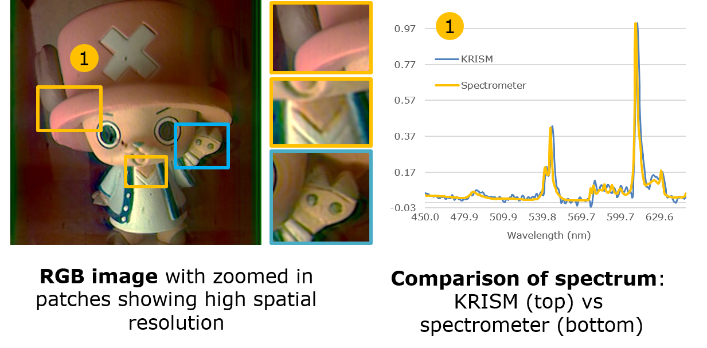
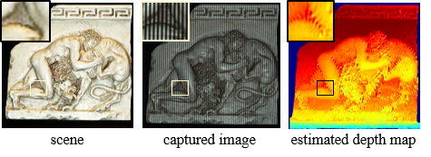

Projects
WIRE: Wavelet Implicit Neural Representations
Implicit neural representations (INRs) have recently advanced numerous vision-related areas. INR performance depends strongly on the choice of activation function employed in its MLP network. A wide range of nonlinearities have been explored, but, unfortunately, current INRs designed to have high accuracy also suffer from poor robustness (to signal noise, parameter variation, etc.). Inspired by harmonic analysis, we develop a new, highly accurate and robust INR that does not exhibit this tradeoff. Wavelet Implicit neural REpresentation (WIRE) uses as its activation function the complex Gabor wavelet that is well-known to be optimally concentrated in space-frequency and to have excellent biases for representing images. A wide range of experiments demonstrate that WIRE defines the new state of the art in INR accuracy, training time, and robustness.
PS2F: Polarized Spiral Point Spread Function for Single-Shot 3D Sensing (PAMI 2022)
Best paper award winner at ICCP 2022
Passive monocular snapshot depth estimation is crucial in applications such as microscopy, autonomous driving, and robot-assisted surgery. However, existing approaches are aimed primarily at resolving depth of a sparse set of emitters, while several real-world scenes are often modeled as extended linear structures. In this work, we leverage an engineered point spread function (PSF) with polarization sensitivity to obtain high quality depth maps that achieve 50% or better reconstruction accuracy compared to state-of-the-art passive monocular depth estimation approaches.
title={PS2F: Polarized Spiral Point Spread Function for Single-Shot 3D Sensing},
author={Ghanekar, Bhargav and Saragadam, Vishwanath and Mehra, Dushyant and Gustavsson, Anna-Karin and Sankaranarayanan, Aswin C and Veeraraghavan, Ashok},
journal={IEEE Trans. Pattern Analysis and Machine Intelligence (TPAMI)},
volume={},
number={},
pages={1-12},
year={2022} }
MINER: Multiscale Implicit Representations (ECCV 2022)
Neural implicit representations enable a continuous mapping from local coordinates to signal of interest with a multilayer perceptron. While there are numerous advantages and applications, existing architectures are not well-suited to rapidly fit very high dimensional signals such as gigapixel images and large point clouds. We overcome the challenges by noting that the Laplacian pyramids of visual signals are multiscale and sparse, enable a concise representation. We leverage the advantages of the Laplacian pyramid by representing small disjoint patches of the pyramid at each scale with a tiny MLP. This enables the capacity of the network to adaptively increase from coarse to fine scales, and only represent parts of the signal with strong signal energy. MINER requires 25% fewer parameters, lower than 33% of GPU memory footprint, and 10% of computational time of competing techniques such as ACORN to reach the same representation accuracy.
DeepIR: A Deep Network-based Image Processing Framework for Thermal Images (ICCV Workshop 2021)
Thermal images captured by uncooled microbolometer cameras suffer from non-uniform noise that leads to severe loss in spatial resolution. We identify that thermal images can be factored into a scene-dependent flux that is concisely modeled as outputs of deep networks, and a scene-independent and slowly varying non-uniformity. By capturing multiple images with small camera motion, we are able to estimate the high quality thermal image.
Super-Pixelated Adaptive Spatio-Spectral Imaging (PAMI 2021)
Capturing spectral information at every spatial pixel in a scene requires cameras that trade off either spatial, spectral, or temporal resolution. We observe that images when oversegmented into super-pixels generate homogenous regions that tend to have similar spectra within the super-pixel. We exploit this observation to build an adaptive hyperspectral camera that consists of an RGB image that acts as a guide and a sptatial-spectral sampler that allows us to sparsely sample spectra of the scene. We first super-pixelate the scene's RGB image and then sample spectra at least at one location within each super-pixel. We then fuse the RGB image with the sparse set of spectral profiles to obtain a high spatial and spectral resolution hyperspectral image at video-rate. Our lab prototype was capable of capturing 600x900 spatial images over 68 bands in 400nm - 700nm at 18 frames per second
author={Saragadam, Vishwanath and DeZeeuw, Michael and Baraniuk, Richard G. and Veeraraghavan, Ashok and Sankaranarayanan, Aswin C.},
journal={IEEE Trans. Pattern Analysis and Machine Intelligence (TPAMI)},
title={SASSI — Super-Pixelated Adaptive Spatio-Spectral Imaging},
year={2021},
volume={43},
number={7},
pages={2233-2244},
Material Classification with Spectrally-Programmable Camera (ICCP 2020)

Materials can be reliably classified by measuring their spectrum. Classification of materials in a scene can then by done by capturing spectrum at each pixel,
resulting in a hyperspectral image, a measurement process that is lengthy and inherently wasteful.
We rely on a simple observation that most spectral classification tasks require computing a linear transform of the spectrum, and the number of such features are very small in number, such as a single measurement for binary classification. We optically compute this linear transformation by building a spectrally-programmable camera,
and capturing images with discriminant spectral filters. this leads to capturing a small set of images, and hence efficiently, high frame-rate material classification setup.
On Space-Spectrum Uncertainty of Spectrally-Programmable Cameras (Optics Express 2020)
The most efficient way of implementing spectral-programming is to rely on a setup that places a diffraction grating on the image plane, which then generates
the so-called rainbow plan. A spatial light modulator (SLM) can then be placed on this rainbow plane to achieve arbitrary spectral coding.
Such a setup requires a narrow slit to implement sharp spectral filters, but leads to blurry images. A wide aperture, in contrast achieves high
spatial resolution but loses spectral resolution.
In this work, we showed that this space and spectrum trade off can be theoretically be represented as a space-spectrum bandwidth product. We proved that
the product of standard deviations of spatial and spectral blurs can be lower bounded by
femto square-meters, where
is the density of
groves in the diffraction grating and
is the central
wavelength of light.
title={On Space-Spectrum Uncertainty Analysis for Spectrally-Programmable Cameras},
author={Saragadam, Vishwanath and Sankaranarayanan, Aswin},
journal={OSA Optics Express},
year={2020} }
Optical Singular Value Decomposition for Hyperspectral Imaging
(Trans. Graphics 2019)

Hyperspectral cameras capture images across several, narrowband wavelengths, which finds usage in numerous computer vision and material identification
applications. Due to a dense sampling of space and spectrum, the captured hyperspectral image is often very high dimensional. This leads to severe loss in
SNR per band, requires very long exposure times and is inherently wasteful.
A key observation is that a hyperspectral image of a natural scene has very limited spectral diversity, leading to a concise low-rank representation.
We propose an optical imager that directly captures this low-rank subspace. We achieve this by implementing two optical operators -- a spatially-coded
spectrometer and a spectrally-coded imager. By alternating between the two, using output of one operator as input to other operator, we capture a low-rank
approximation with as few as 10 measurements.
title={KRISM: Krylov Subspace-based Optical Computing of Hyperspectral Images},
author={Saragadam, Vishwanath and Sankaranarayanan, Aswin},
journal={ACM Trans. Graphics},
year={2019} }
Micro-baseline Structured Light (ICCV 2019)

Structured Light (SL) relies on projecting a known pattern and capturing an image of the scene. By computing the correspondences between projector and camera pixels, SL
is capable of highly accurate depth map estimation. Existing SL techniques either require projection of multiple patterns, or rely on complex computing to estimate
the depth map, both of which preclude an efficient implementation on mobile systems such as cellphones and drones.
Devices with small real estates can only accommodate a narrow (micro) baseline between camera and projector. We observe that such a narrow baseline can be
used for linearizing the otherwise non-linear SL equation relating projected pattern and captured image. This leads to a linear equation in two unknowns (albedo and disparity)
at each pixel. The resulting equation can then be efficiently solved using a local least-squares approach which requires minimal computational resources, and
needs projection of only a single pattern.
Wavelet tree parsing with freeform lensing (ICCP 2019)
Wavelet transform of an image is both a sparsifying and a predictive transformation. By optically measuring the wavelet coefficients with a single pixel camera that measures linear projections of scene's image, one can adaptively tease out the dominant wavelet coefficients, requiring fewer measurements than compressive sensing. In practice, such a method faces the debilitating problem of increasing noise with increasing spatial scales, due to spatially compact wavelet basis.
Instead of using a DMD as a spatial light modulator (SLM), we propose using a phase-only SLM which simply redistributes light into the spatially compact
basis, thus maintaining a constant measurement SNR independent of spatial scale. This allows high quality imaging with a small set of high SNR measurements made adaptively.
title={Wavelet parsing with freeform lensing},
author={Saragadam, Vishwanath and Sankaranarayanan, Aswin C},
booktitle={Intl. Conf. Computational Photography},
pages={1--9},
year={2019},
organization={IEEE}
}
Compressive spectral anomaly detection (ICCP 2017)
One of the distinguishing feature of materials is their spectral signature, which is the intensity of light the material reflects as a function
of wavelength. Hyperspectral images, which capture spectral signataure at every pixel, are used for material classification and one specific
application is anomaly detection, where materials very different from the background and in trace quantities are identified.
However, capturing all the data to detect material present in trace quantities is both costly and wasteful. Instead, we propose a novel
two stage procedure where we first identify the spectrum of the background and remove it. In the second stage, due to absence of background,
presence of anomalies can be seen as measurement of a sparse signal, which can be done with various compressive sensing techniques.
title={Compressive spectral anomaly detection},
author={Saragadam, Vishwanath and Wang, Jian and Li, Xin and Sankaranarayanan, Aswin C},
booktitle={Computational Photography (ICCP), 2017 IEEE International Conference on},
pages={1--9},
year={2017},
organization={IEEE}
}
Cross-scale predictive dictionaries (Trans. Image Processing 2016)
Contrary to an orthonormal basis, an overcomplete dictionaries has far more elements than the signal dimension,
which admits sparse representation. Such a framework enables compressive sensing tasks, by exploiting the sparsity during sensing
as well as recovery of the signal.
Unfortunately, such applications are far from practical, due to the enormous dictionaries required for good results and the significant
time required for recovery. We instead propose a novel clustering technique which reduces the recovery time by a factor of 10x to 100x,
with very small loss in accuracy. The clustering of dictionary elements is done by identifying that visual signals are similar across
scales, thus enabling identification of clusters with a down-sampled version of the same signal.